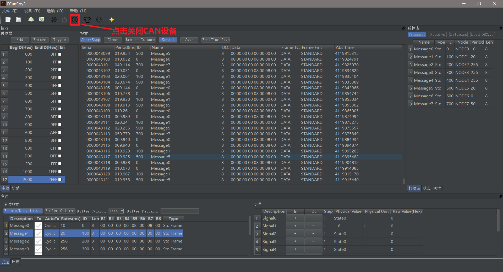
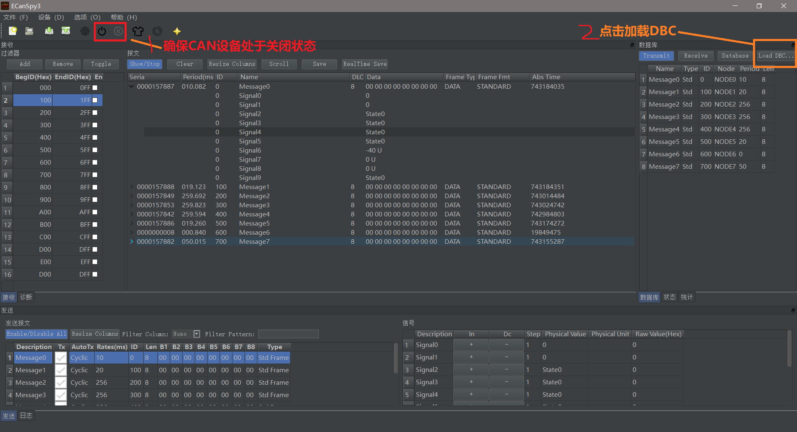
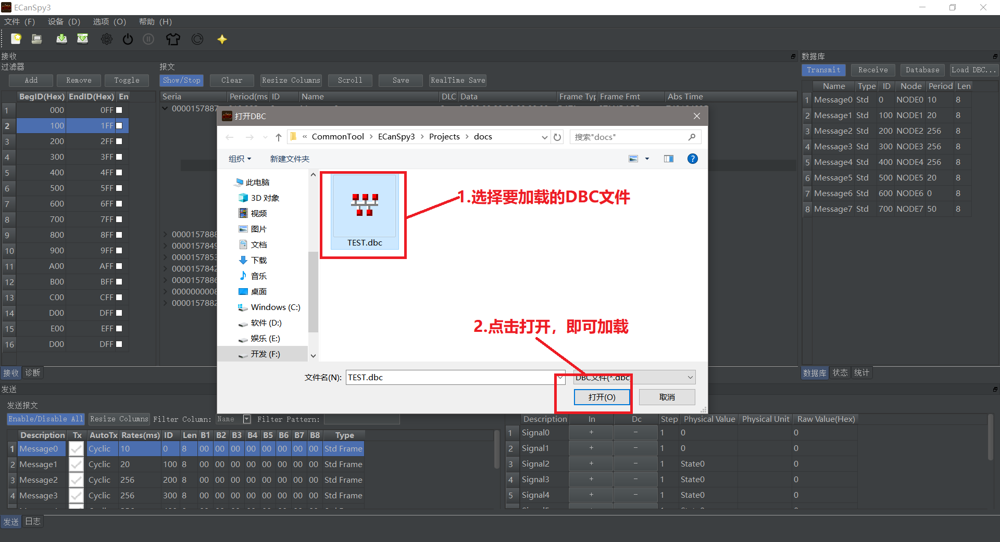
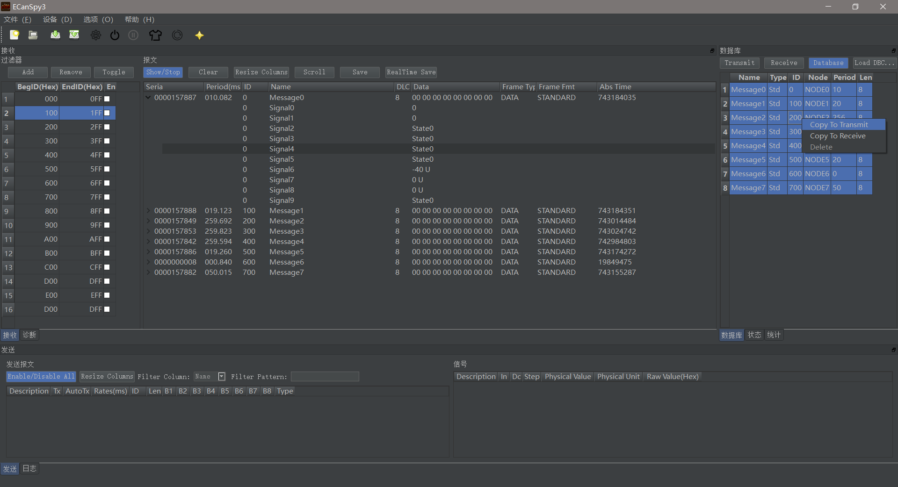
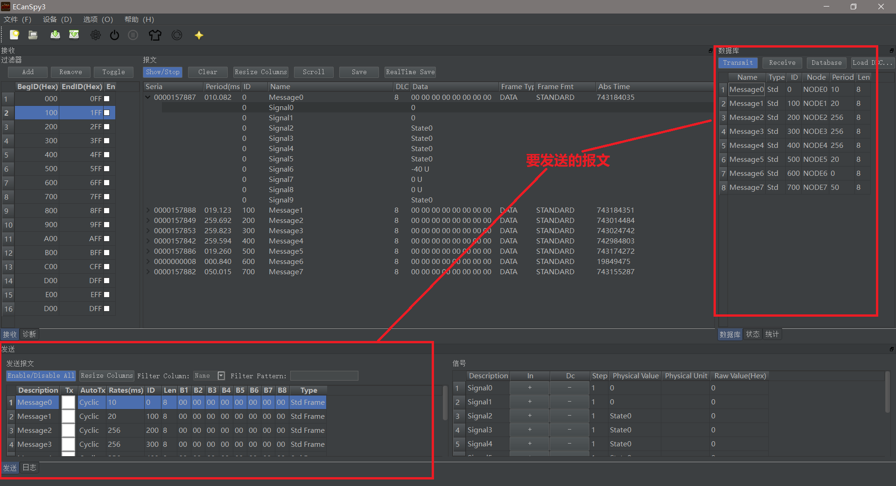
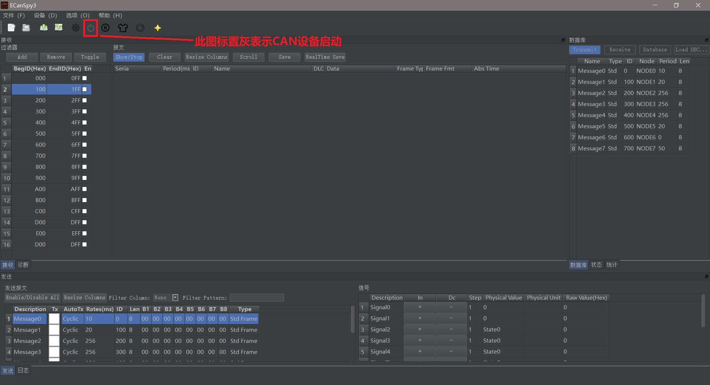
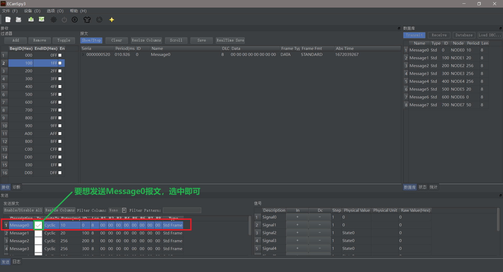
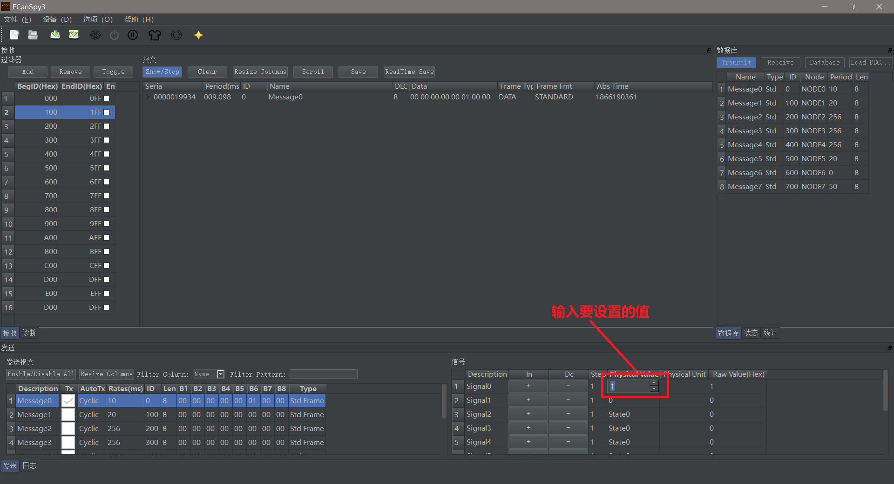
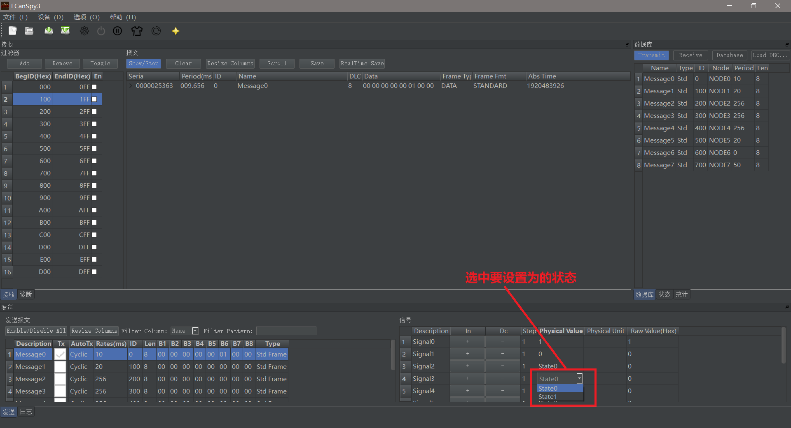

简介
ECanSpy3是一款免费、开源的CAN总线数据模拟软件。
使用本软件，加上对应项目的DBC文件，即可用来模拟车身上的CAN数据。
使用本软件，可以用来模拟单个报文，或者模拟多个报文。
对于车载行业的朋友，并且从事于车身CAN总线工程师来说应该非常熟悉CANOE和VehicleSpy3这两款商业软件，使用前两者软件包含模拟
车身总线数据来保证没有实车的情况下也可以开发CAN总线应用。但是这两款软件非常昂贵，对于只需要模拟车身总线数据来说，本软件可以
完全替代前两者软件，除了您可以在网上买了USBCAN盒，就可以使用本软件来模拟车身数据了。
本软件只要您进行正确配置，就可以自动解码总线上的数据，并且提供解码后的树状显示，方便您查看当前总线上的信号状态。
前置步骤
1.因为本程序支持的CAN设备是广成科技的CAN设备，所以你需要有个广诚科技的USB CAN盒
2.安装号USB CAN盒驱动，并且和电脑连接起来
安装
1.点击ECanSpy3主页上的下载按钮，您会得到一个zip压缩文件
2.将此压缩文本解压缩到本地，您会得到如下的文件结构：
| 版本号
| --- packaged
| ------ ecanspy3.exe
| --- unpacked
| ------ XXX.dll（若干个dll文件）
| ------ ecanspy3.exe
您可以直接将packed目录下的ecanspy3.exe直接拷贝到本地上，就可以运行了。您也可以将unpacked目录拷贝到您希望的路径下，
然后此目录下的ecanspy3.exe也可以直接运行。
说下两者区别，packaged目录下的ecanspy3.exe是经过经过压缩软件打包压缩的，因为本软件使用QT开发，所以有很多QT依赖库，
导致正常情况下，软件包体积会比较大，但是使用打包压缩后，体积就会小很多，所以使用使用这个包非常方便。
unpacked目录下的文件是未经过打包的文件，您也可以直接使用，使用这个目录下的ecanspy3.exe理论上性能可能会比较高点。但是
建议您，直接使用packed目录下的ecanspy3.exe,可以减少出错概率，避免不必要的麻烦。
软件使用步骤
1.关闭CAN设备
点击工具按钮关闭CAN设备，只有在CAN设备关闭的情况下，才可以进行后续操作(解释下为什么使CAN设备默认开启，因为此程序带有项目保存功能，当下次启动的适合 ，会自动加载上次的项目, 所以就不需要再次进行配置了，直接使用就行了)，如下图所示：

2.加载DBC文件
加载DBC文件（这个是信号编码和解码的前提，并且发送操作也是依赖这一步骤）
2.1 首先，点击加载DBC按钮

2.2 然后，选择要加载的DBC文件, 点击打开

3. 设置要发送的报文
选中要发送的报文，然后右键弹出菜单，选择copy to transmit，入下图所示:

当执行第三步后，会在整个窗口的发送面板中加载所选择的发送报文信息，并且发送面板中的信号窗体中会自动显示当前报文的所有信号

4. 启动CAN设备
启动CAN设备, 如下图所示：

5. 勾选要发送的报文
如果想发送哪个报文，值需要将对应报文的CheckBox选中，即可

6. 改变信号值
点击+/-按钮修改信号值
点击物理值单元格来信号值


感谢
- 感谢QT库
- 感谢Vector公司的发明DBC文件格式
- 感谢dracula项目